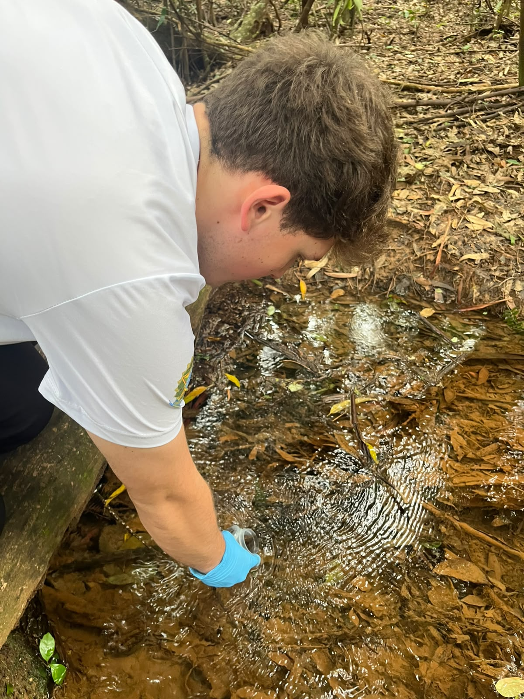
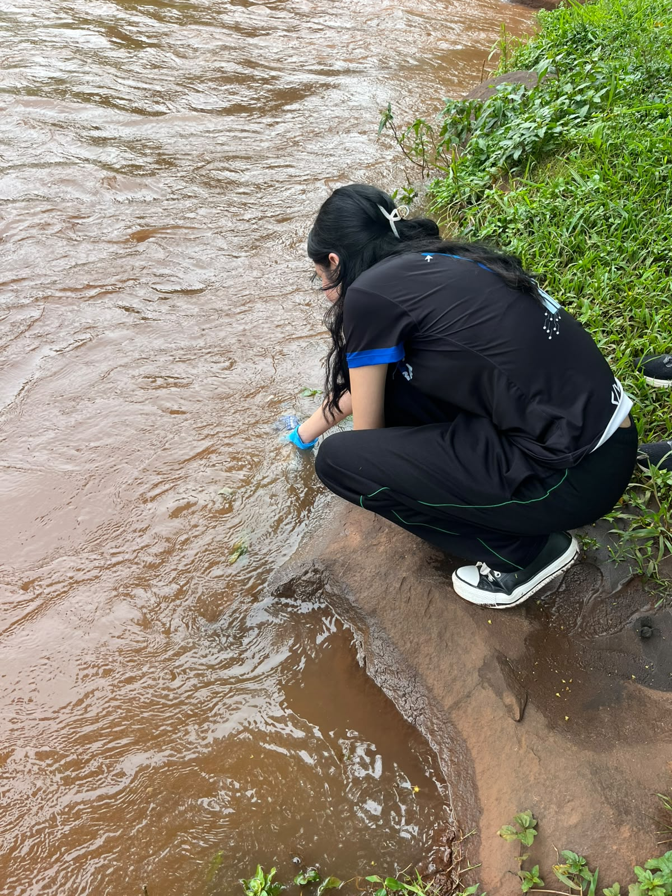
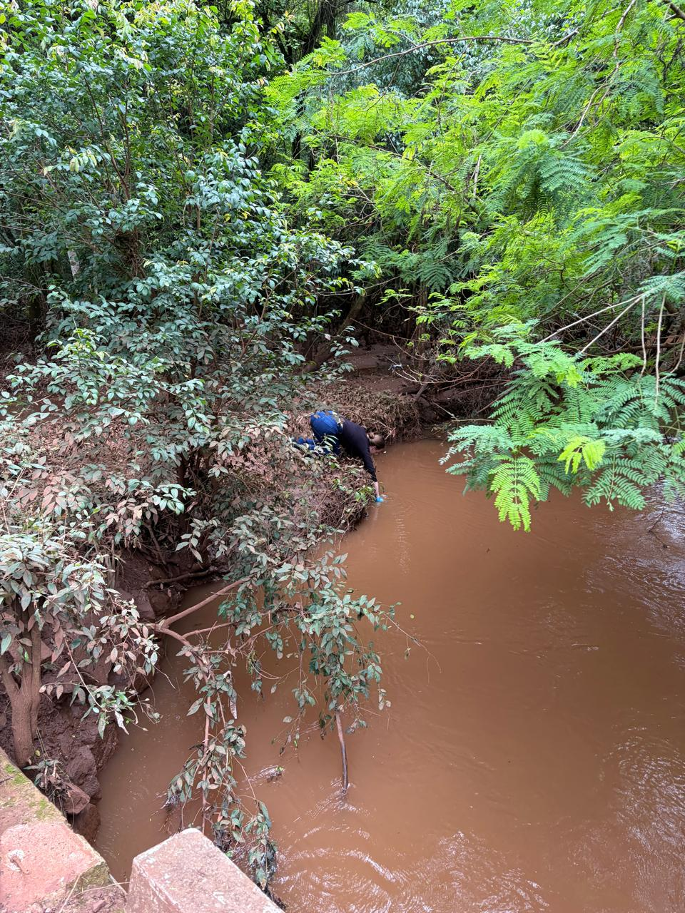
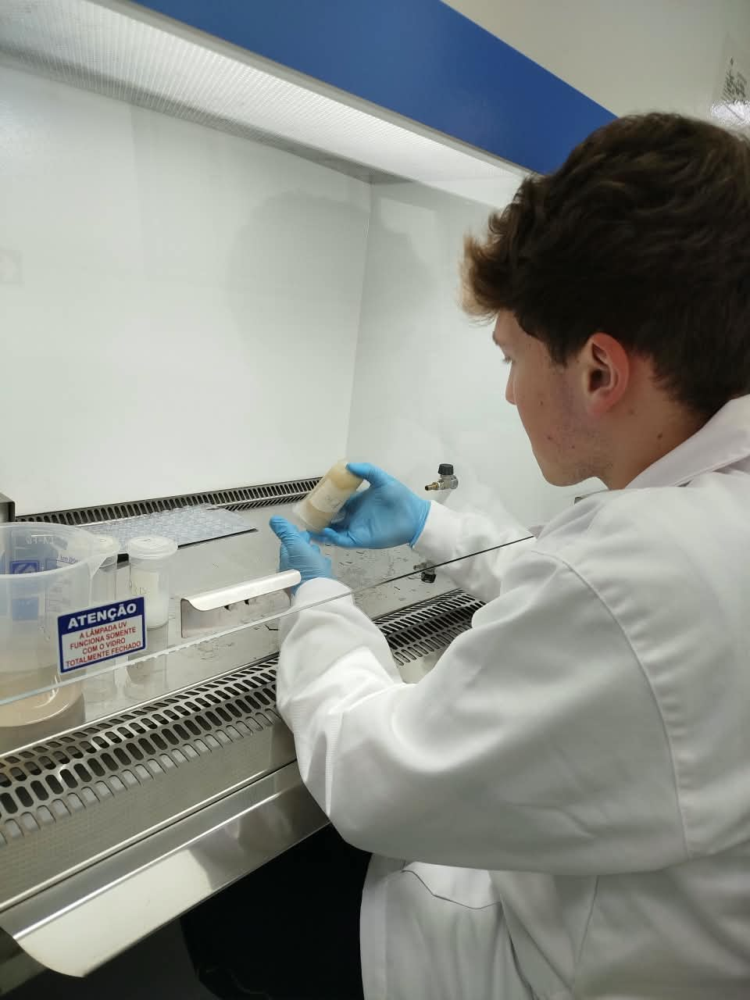
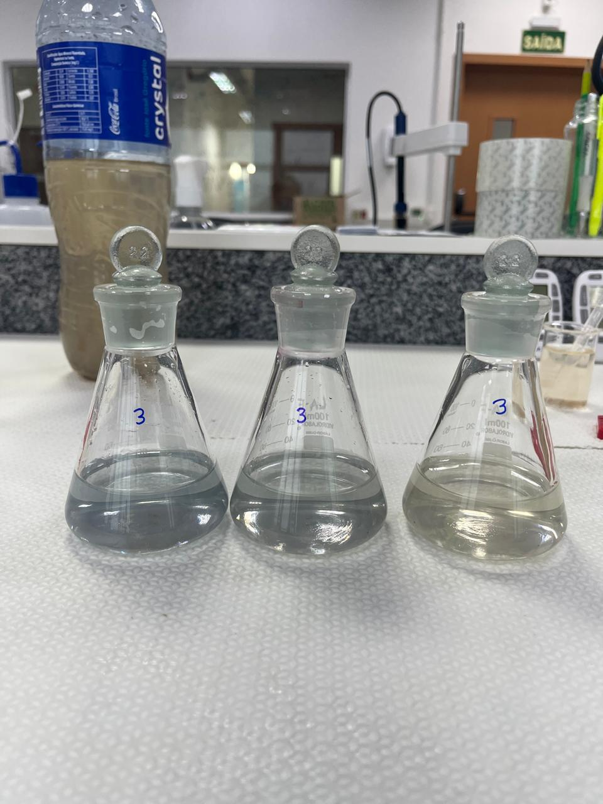
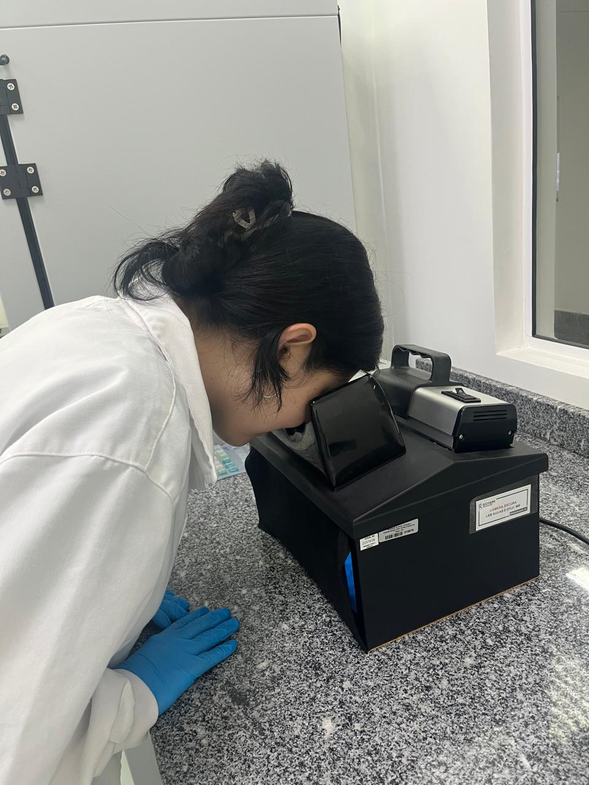

.png)
Metodologia
Nossa metodologia foi 100% baseada em estudos e artigos que já realizaram projetos com o mesmo próposito nosso.
Definição dos pontos
Seleção de três pontos de coleta no Rio Toledo, considerando diferentes áreas do course do rio e as características do entorno. Sendo elas a nascente localizada entre São Luiz do Oeste e Linha Gramado, na área rural de Toledo (24°46'32,82"S e 53°34'16,65"W (P1)), trecho médio (P2) localizado em uma área urbana no Lago Municipal dos Pioneiros (24°43'55,67"S e 53°43'41,23"W), e a foz do rio (P3) localizada em uma área periurbna de Toledo (24°45'10,56"S e 53°46'43,65"W).
Coleta das amostras
Coleta de amostras de água nos três pontos definidos, seguindo os procedimentos estabelecidos para garantir a identificação e a representatividade das amostras. Sendo as fotos abaixo P1, P2 e P3 respectivamente.


 =======
=======



>>>>>>> 176775530306ca290f45bbc924af8c2d80715f88Análises Laboratoriais
Realização de análises microbiológicas, como a análise de coliformes totais e Escherichia coli, e análises físico-químicas, incluindo parâmetros como turbidez, cor, pH, temperatura, oxigênio dissolvido, fósforo total e sólidos totais.

<<<<<<< HEAD
 =======
=======

>>>>>>> 176775530306ca290f45bbc924af8c2d80715f88Organização dos dados
Registro dos resultados obtidos nas análises. Todas as análises prontas, permitindo a comparação da qualidade da água entre os diferentes pontos de coleta e desenvolvimentos das tabelas dos resultados quantitaivos.

 =======
>>>>>>> 176775530306ca290f45bbc924af8c2d80715f88
=======
>>>>>>> 176775530306ca290f45bbc924af8c2d80715f88
Interpretação
Avaliação dos resultados com base nos parâmetros de qualidade da água e na literatura científica, identificando as condições ambientais observadas nos pontos analisados, e conclusão das tabelas e resultados.